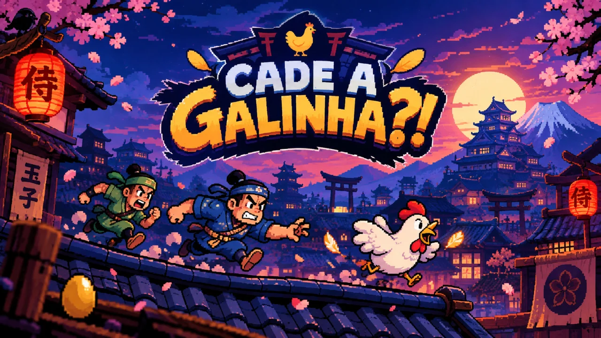

CARREGANDO...
CADÊ A GALINHA?!
Nao foi possivel carregar a biblioteca Phaser 3 (vendor/phaser.min.js).
Confira se o arquivo esta na pasta do jogo e recarregue a pagina.
▼
◀
▶
▲
◀
▶
▼
ESP
DASH
PULO
⛶
❚❚
VIRE O CELULAR
O JOGO É EM PAISAGEM